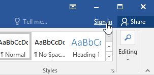
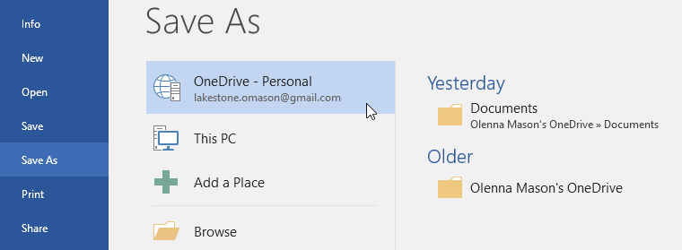

/en/word/getting-started-with-word/content/
Many of the features in Office are geared toward saving and sharing files online. OneDrive is Microsoft’s online storage space that you can use to save, edit, and share your documents and other files. You can access OneDrive from your computer, smartphone, or any of the devices you use.
To get started with OneDrive, all you need to do is set up a free Microsoft account, if you don’t already have one.
If you don't already have a Microsoft account, you can go to the Creating a Microsoft Account lesson in our Microsoft Account tutorial.
Once you have a Microsoft account, you'll be able to sign in to Office. Just click Sign in in the upper-right corner of the Word window.

Once you’re signed in to your Microsoft account, there are a few of the things you’ll be able to do with OneDrive:
When you’re signed in to your Microsoft account, OneDrive will appear as an option whenever you save or open a file. You still have the option of saving files to your computer. However, saving files to your OneDrive allows you to access them from any other computer, and it also allows you to share files with friends and coworkers.
For example, when you click Save As, you can select either OneDrive or This PC as the save location.

/en/word/creating-and-opening-documents/content/